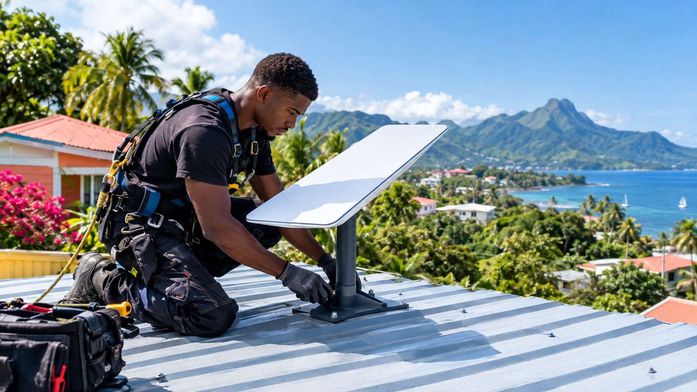

Installation Starlink en Martinique
Internet rapide partout, même dans les mornes, au bout d’une trace ou sur un bateau : on installe votre Starlink proprement et on règle le Wi-Fi de toute la maison.
Installation Starlink dès 119 € · Devis gratuit · Prix annoncé avant
Starlink est l’internet par satellite de SpaceX. Il fonctionne en Martinique, y compris là où la fibre et l’ADSL n’arrivent pas bien : quartiers des hauteurs, Nord Atlantique, Nord Caraïbe, maisons isolées, gîtes, chantiers ou bateaux.
Le kit se pose « soi-même » en théorie. En pratique, tout se joue sur l’emplacement : la moindre branche, un morne ou un pignon devant l’antenne provoque des coupures. Nous repérons le meilleur endroit avec l’application, fixons l’antenne solidement (le vent et la saison cyclonique ne pardonnent pas), passons le câble proprement et réglons le Wi-Fi pour qu’il couvre toute la maison.

Exemple : une maison au Morne-Rouge
- ADSL à 2 Mb/s, coupures le soir
- Antenne Starlink posée au sol, derrière un manguier
- Wi-Fi qui ne passe pas à l’étage
- Antenne fixée sur le pignon, 0 % d’obstacles
- Bornes Wi-Fi : tout l’étage couvert
- Box gardée en secours automatique
Pourquoi choisir IloTech
- Repérage du ciel avec l’application avant de percer
- Fixation adaptée au vent et aux cyclones
- Câble passé proprement, sans trou inutile
- Wi-Fi réglé dans toutes les pièces
- Aide à la commande et à l’activation, offerte
Tarifs
Prix de départ, TVA non applicable, art. 293 B du CGI. Le prix exact est confirmé avant toute intervention. Paiement en 3 fois sans frais dès 500 €.
Installation Starlink
Internet par satellite, partout en Martinique. Le kit et l’abonnement se commandent chez Starlink (nous vous aidons à le faire). Nous posons l’antenne au meilleur endroit, sans obstacle, et réglons le Wi-Fi de toute la maison.
- Repérage de l’emplacement sans obstacle (arbres, mornes, toits)
- Pose de l’antenne et passage propre du câble
- Activation et réglage du Wi-Fi
- Test de débit devant vous
- Kit Starlink et abonnement (achetés chez Starlink)
- Pose en hauteur au-delà d’un étage (sur devis)
| Aide à la commande et à l’activation | Offert |
| Fixation sur le toit, un mât ou un pignon | +69 € |
| Câble long ou passage en gaine (jusqu’à 30 m) | +39 € |
| Wi-Fi dans toute la maison (bornes mesh) | +79 € |
| Secours automatique : box et Starlink ensemble | +59 € |
| Internet maintenu pendant les coupures (onduleur) | +59 € |
| Starlink Mini : réglage bateau, véhicule ou chantier | +29 € |
Internet et Wi-Fi
Réseau maison ou bureau.
| Diagnostic Wi-Fi | +35 € |
| Amélioration Wi-Fi | +49 € |
| Wi-Fi dans toute la maison | +99 € |
| Configuration box / routeur | +35 € |
| Câblage | +99 € |
| Réseau professionnel | +199 € |
Onduleur
Protection contre les coupures. Matériel non inclus : nous vous conseillons le modèle adapté (sur devis).
| Arrêt automatique du PC | +15 € |
| Protection box et TV | +10 € |
| Changement de batterie (hors pièce) | +19 € |
| Onduleur pour serveur ou caisse | +35 € |
Comment ça se passe
- Vous nous expliquez votre besoin en ligne, par WhatsApp ou par téléphone.
- Devis gratuit : le prix est annoncé avant, sans surprise.
- Rendez-vous à partir du lendemain, chez vous, en agence ou à distance.
- Intervention et suivi : on vous explique tout, et on reste joignable.
Questions fréquentes
Starlink fonctionne-t-il en Martinique ?
Oui. Starlink est disponible en Martinique. Le débit dépend surtout de l’emplacement de l’antenne : il lui faut un grand morceau de ciel dégagé, c’est ce que nous vérifions avant la pose.
Combien coûte l’installation ?
La pose commence à dès 119 €. La formule « Starlink installé, Wi-Fi partout » (fixation sur le toit et bornes Wi-Fi) est à prix fixe. Le kit et l’abonnement s’achètent directement chez Starlink : nous vous aidons à les commander.
Que se passe-t-il pendant une coupure de courant ?
Sans électricité, l’antenne s’arrête comme une box. Avec un onduleur adapté, internet reste allumé pendant les coupures courtes : nous le dimensionnons pour votre installation.
Peut-on garder sa box internet ?
Oui. Nous pouvons relier la box et Starlink : si l’un tombe, l’autre prend le relais automatiquement.
Et sur un bateau ou un chantier ?
Le Starlink Mini se règle pour un bateau, un véhicule ou un chantier. Nous vous montrons comment l’orienter et l’alimenter.
Où intervenons-nous en Martinique ?
Nos agences de Ducos (0696 77 99 02) et du Robert (0696 48 26 78) couvrent toute l’île. Déplacement offert dès 200 € de prestation, gratuit en agence et à distance.
- Commune d'agence (déplacement offert) : Ducos, Le Robert
- Centre (déplacement 10 €) : Fort-de-France, Le Lamentin, Schœlcher, Saint-Joseph, Le François, Rivière-Salée, Saint-Esprit
- Sud (déplacement 20 €) : Les Trois-Îlets, Les Anses-d'Arlet, Le Diamant, Sainte-Luce, Rivière-Pilote, Le Marin, Sainte-Anne, Le Vauclin
- Nord (déplacement 25 €) : La Trinité, Le Gros-Morne, Sainte-Marie, Le Marigot, Le Lorrain, Basse-Pointe, Ajoupa-Bouillon, Macouba, Grand'Rivière, Le Morne-Rouge, Saint-Pierre, Le Prêcheur, Le Carbet, Bellefontaine, Case-Pilote, Le Morne-Vert, Fonds-Saint-Denis
Installation Starlink en Martinique : parlons-en
Réponse rapide sur WhatsApp aux heures d’ouverture. Devis gratuit et sans engagement.
À lire aussi : Starlink en Martinique : le guide complet avant d’installer
Nos autres services
- Wi-Fi et internet partout dans la maison
- Installation de caméras de surveillance
- Domotique : votre maison pilotée du téléphone
- Installation TV, box et son
- Starlink pour gîtes, entreprises et bateaux
- Dépannage informatique en Martinique
- Réparation d’ordinateur portable et fixe
- Virus, arnaques et comptes piratés
- Tous nos services et tarifs